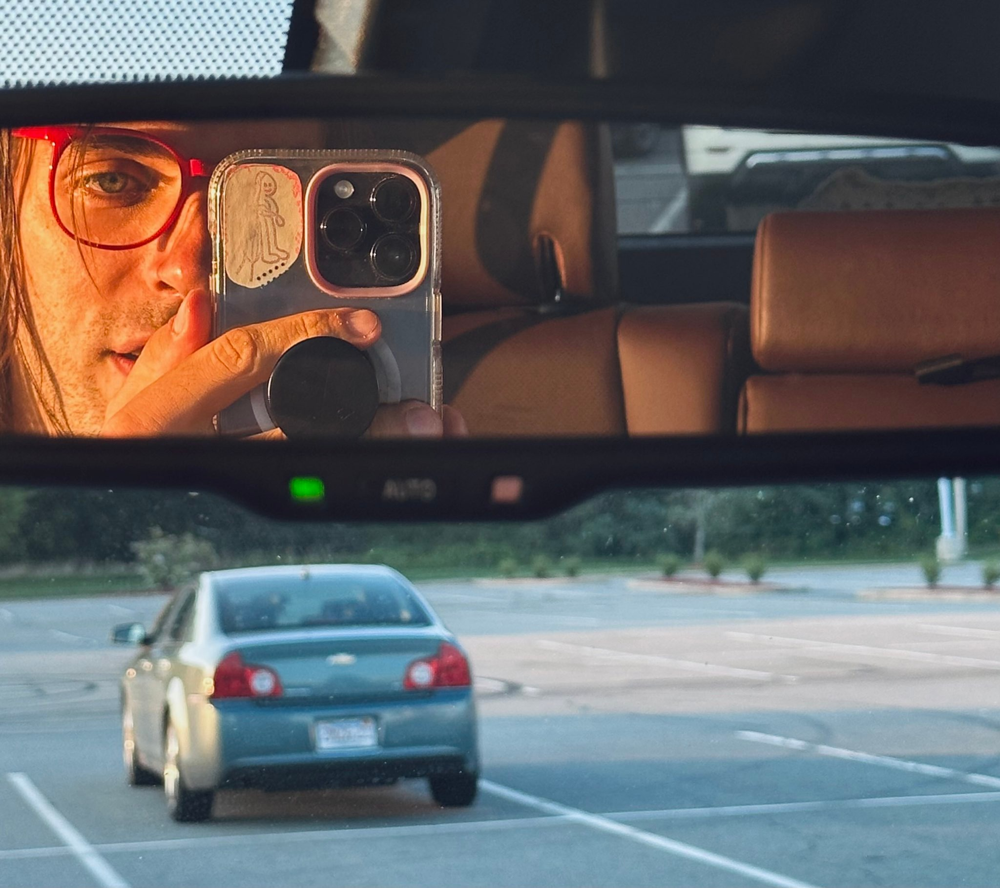

digitpain.com is the portfolio of…

Jeffrey Alan Scudder
- Aesthetic Inc.
2023
- aesthetic computer (wip)
- hell_ world
- Sex: The Whistlegraph Zine
- Freaky Flowers
2020–2022
- Ten Whistlegraphs: Exhibition
- The Longest Whistlegraph Ever (so
far)
- Radical Digital Painting Collection
- whistlegraph.com
- No Paint (.art)
- Whistlegraph's TikTok
… 2019
- New Dynamic Graphics: India HCI 2019 (Video)
- New Role: Asst. Professor of Emerging Digital Practices in
Ashland, Oregon.
- Meeting Mr. Kid Pix
- Radical Digital Painting: Utah (w/ Ella Fleck)
- Jeffrey: Do Not Go to the Valley: Mould Map 7
- Radical Digital Painting: Malibu (Recorded 2018)
- The Artword Podcast - JAS on Radical Digital
Painting
- Drawing
is the best videogame - The Creative Independent
… 2018
- Radical
Digital Painting (Summary)
- 35c3: Radical Digital Painting
- RDP Webinar - uniarts Helsinki
- Are.na
Podcast - Radical Digital Painting
- Picture
Making Internship & Seminar w/ Alex Freundlich
- Radical Digital Painting & Political Rock Euro Tour (JAS
on Paper)
- RDP
@
Pioneer Works
- Soft Wallpaper for iOS
- "Radical
Digital
Painting" w/ Julia Yerger @ Johannes Vogt Gallery
- (Lecture) Radical Digital Painting: Hash Award 2018 |
Virtual Goes Real (@ ZKM)
- In conversation | on drawing, animation, and coding
systems
- Casey Reas & Jeffrey Alan Scudder in
Conversation
… 2017
- Rhizome Artist
Profile:
Jeffrey Alan Scudder (Jeffrey Heart)
- Jeffrey Heart on Drip
- Just Another System: Radical Digital Painting Team
- A Manifesto for Radical Digital
Painting
- Ten Minute Painting
- RDP: London
- RDP: Copenhagen
- RDP: Berlin @ Neumeister Bar-Am
- Tumpin
- RDP
@ GIPHY's TIME_FRAME Exhibition - June 18
- Imaginary Screenshots: Extreme Slide Lecture
- Radical Digital Painting @ Oberlin College - May 1
- Can you make a digital picture without a computer?
- JAS: In the Grid - Babycastles, NYC: Saturday, April 15
… 2016,
- team scrub poem (hardcoded subs)
- Explained Pictures
- Pictures
- Finger Quilt
- gamecube poem (hardcoded subs)
- Digital Painting (UCLA)
- No Paint
- Digital Painting, Core Lab: Interaction, Web Advanced: JavaScript
(Parsons)
- JAS life (blog)
- Special Report
… 2015,
- xbox poem (hardcoded subs)
- Jeffrey's Drawings*
- Daisy Chain Book w/ Lali Foster
- bigwalt59.com w/ Lali Foster
- Teacher Directed Activity
- Maskware
2014,
- Shrub w/ Linked by Air
- Traveller
- Word Web
2013,
- Attn: Trap
- JAS' bin.sc*
- Jeffrey's Web Pages*
- Interludes and Remnants
- Gordilloscudder
- Self-Actualization Replaces the Journey
2012,
- Suncroppings
- Marker
2011.
- Cricket
- the Polygon Replicating Bitmap Authoring Tool